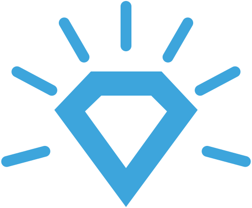
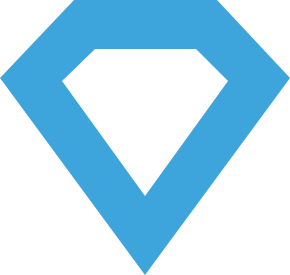

Analytická divize
Druhá perspektiva pro klíčová strategická rozhodnutí.
Akvizice. Pivot. Investice. Nástup AI. Vstup na nový trh. Prodej firmy. Rozhodnutí s klíčovým dopadem bývají nevratná – právě tehdy pomůže strukturovaný pohled, který proberete ve firmě dřív, než se zavážete.
Zjistit víc o analýzáchUkázat QR kód nebo se mi ozvěte na LinkedIn.

Pro koho
Pro koho to je
CEO firmy
Stojíte před rozhodnutím, které přesahuje běžnou operativu, a potřebujete pohled nezávislý na týmu i běžném poradenském okruhu.
Vlastník, family office
Generační přechod, prodej, investice. Strategická vrstva, kterou nedostanete od právníka ani auditora.
Board, dozorčí rada
Druhý pohled na záměr managementu. Strukturovaná oponentura připravená jako podklad na zasedání.
Společníci ve firmě
Pomůže sladit pohled na strategii a překlenout neshody o tom, kam firmu vést.
Co řešíme
Časté typy analýz

Strategic Directions Atlas
Mapa terénu a možných směrů pro firmu – s podmínkami, kdy který směr dává, nebo nedává smysl.
AI stress-test
Nestranný model toho, nakolik nástup AI pravděpodobně zasáhne váš obor – ať můžete včas plánovat.
AI adaptace
Možné směry adaptace na AI podle silných stránek a situace firmy, v krátkém i dlouhém horizontu.
M&A
Koupit, nebo nekoupit? Prodat, nebo neprodat? Strategický pohled na trendy a synergie jako doplněk analýzy čísel.
Sektorové trendy
Regulace, technologie, geopolitika, demografie i „wild cards“ – obecně, nebo přímo na míru vaší firmě.
Předání rodinné firmy
Pevné základy pro předání řízení další generaci, s důrazem na zachování dobrých rodinných vztahů.
Formáty
Tři formáty podle rozsahu
-
Single perspektiva
Pro koho: founder nebo manažer před rozhodnutím
Jedna konkrétní otázka, jeden strukturovaný pohled. Strategický health-check před rozhodnutím.
-
Mini-balíček
Pro koho: CEO menší firmy, člen boardu
Kombinace 2–3 příbuzných pohledů. Hloubkový pohled na téma z více úhlů.
-
Plná analýza
Pro koho: board, majitel, family office, VC
Multi-perspektivní stress-test: strategické rámce, sektorová analýza, scénáře a oponentura.
Dodání obvykle 1–2 týdny bez ohledu na formát. Cena orientačně od 10 000 Kč podle rozsahu – přesnou částku řekneme po krátké úvodní konzultaci.
Proces
Jak to celé probíhá
Úvodní konzultace
Téma, kontext a co od analýzy potřebujete. Řekneme, jaký formát dává smysl a kolik to bude stát.
Příprava podkladů
Veřejné a polo-veřejné zdroje, po domluvě propojené s vaším kontextem. Důvěrnost samozřejmostí.
Strukturovaná analýza
Sektorová expertiza, strategické rámce, oponentura a syntéza.
Výstup, který se používá
Dokument, ze kterého se rozhoduje: teze, rizika, doporučení, otevřené otázky. Plus společná diskuse.
Co tady neslibujeme
- Velká část analýzy běží přes AI – škáluje sektorové analýzy, syntézy a scénáře. AI ale dělá chyby, proto každý výstup prochází lidskou kurátorskou vrstvou.
- Nedáváme záruky výsledku. Strategická rozhodnutí jsou vaše – my dáváme strukturu, perspektivu a oponenturu.
- Nenahrazujeme velké poradenské domy. Doplňujeme chybějící druhou perspektivu tam, kde je potřeba víc než ranní brainstorming.
Proč právě tady
Klíčová kombinace: strategie a exekuce

Mira Vlach
Hlavní analytik
Dvacet let pracuje s firmami na strategických projektech a řízení projektového portfolia, je expertem na OKR a vede Projektový klub s více než 1 000 účastníky z praxe. Silné zázemí ve strategii a její realizaci kombinujeme s pokročilou AI analýzou.
Službu provozujeme v pilotní fázi – přednostně pro účastníky Strategického bootcampu a vybrané pilotní spolupráce.
Stojíte před rozhodnutím, které zásadně ovlivní budoucnost firmy?
Začneme krátkou nezávaznou konzultací. Řekneme vám, jestli má smysl jít dál a v jakém formátu. Žádné prezentace, žádné generické nabídky.
Zjistit víc o analýzáchNebo se mi ozvěte na LinkedIn.